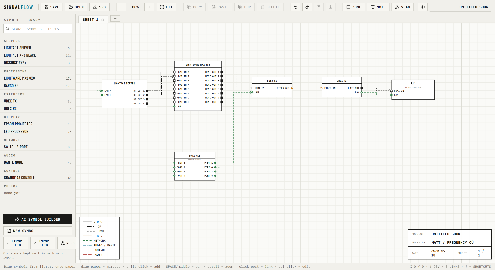

Draw the signal path, not the boxes.
Drop devices from a symbol library, click port to port, and SignalFlow draws the cable — spaced, colour-coded by signal, VLAN-aware, and ready to export. Built by a disguise operator for show days, not for CAD days.
Nothing to install for the browser version. The download is a single HTML file (≈ 95 KB) plus the optional AI bridge — same app, runs from your desktop, works offline.

The legend is the feature list.
Every line style below is a real one from the drawing. SignalFlow's whole job is to make the conventions you already use on paper happen automatically on screen.
Symbols that know their ports
Every port carries a signal type and a connector — HDMI, 12G SDI, SFP28, XLR, powerCON, IEC C14. Numbered runs are grouped (24 × PoE+ is one entry), the link popover warns when the two ends don't match, and each placed device can override its ports without touching the library.
VLAN registry
Define a VLAN once — number, name, colour — and pick it from any network port. Ports, links and the legend take the colour, so the control net and the media net read apart at a glance. Ports can carry an IP too.
Auto-routing that stays legible
Links are routed as elbows around the symbols. Cables that share a channel are spaced 5 px apart and ordered to cross each other as little as possible, so a 24-port fan-out reads as a bundle, not a smear. Take over with routed mode and waypoints when you want to.
Sheets and off-page flags
Split a big show across sheets that share one library and one VLAN registry. A flag link turns a long run into a pair of pennants naming the far end — the drawing-office convention, done for you.
Zones, notes, title block
Box up a rack or a position as a zone, drop notes on the paper, and let the title block fill itself in from the project. Sixty steps of undo across everything.
Export that prints, files that diff
One click exports the sheet as SVG with its legend and title block. Projects are plain .signalflow.json — keep them in version control, diff them between revisions, hand them to the next operator.
Type a model number. Get the symbol.
The device you need is rarely in anyone's library. SignalFlow can research it from the manufacturer's spec pages, or read a rear-panel drawing you drop in, and hand you a symbol to check before it's added.
Type "NETGEAR M4250-26G4F-PoE+", or drag in a rear-panel PDF, drawing or photo.
Two passes: extract, then verify every port-bank count against a page that actually states it. The result shows the source URL and the sentence it read.
Labels, sides, signals and connectors are all editable in the preview. Anything the engine couldn't support with evidence is flagged in amber, not slipped in.
✓ POE+ 1G ×24 · 1G ×2 · SFP ×4
✓ OOB MGMT · CONSOLE RJ45 · CONSOLE USB-C · USB-A · AC IN C14
source netgear.com/…/gsm4230p/
quote "24 x 1G PoE+, 2 x 1G, 4 x SFP"
evidence ok · no banner
The bridge is optional and runs only on your machine. If a device's port counts can't be found on a readable page, the builder says so instead of guessing — a wrong symbol is worse than no symbol.
Two ways in. Same app.
Both keep your projects as files on your own machine. Custom symbols live in the browser you use; the shared library syncs in on its own.
Online
Recommended- Open the link. That's it — nothing to install, nothing to update.
- Save projects with the Save button; they download as
.signalflow.json. - Works in any current browser on Windows, macOS or Linux.
Local
Offline · your desktop- Download, unzip anywhere, double-click
signalflow.html. - Identical app, runs from a file, no network needed for drawing.
- The zip also holds the AI bridge and its launchers, for when you want research.
Three steps, once per machine
Research runs through a small local bridge on your own Claude Code login, so nothing is metered to a shared key. Online users grab SignalFlow-bridge.zip; the local download already includes it.
- Install Node.js (LTS).
- Install Claude Code and sign in:
npm install -g @anthropic-ai/claude-codethenclaude login. - Double-click
SignalFlow.bat(Windows) orsignalflow.command(macOS). It starts the bridge and opens the app; the AI builder switches to the bridge engine by itself. Stuck?node sf-bridge.mjs testtells you why.
Symbols travel.
Build a device once and every SignalFlow can have it. Submissions are reviewed before they go global, so the library stays clean.
Hover a custom symbol in the library, click ⇡. A pre-filled GitHub issue opens — press submit. A GitHub login is all it takes.
A workflow validates the JSON and posts the port table back on the issue within a minute.
One label approves it; closing the issue declines it. Same id again means an update, not a duplicate.
Every app pulls the library on launch and every 30 minutes. Updated symbols replace local copies unless they're placed on a sheet.
Library repo: github.com/MattVillis/signalflow-symbols · shared symbols are generic — VLAN and IP assignments never leave your project.
Beta, honestly. Rev β
It's already drawing real shows. The rough edges are known, the roadmap is short, and your bug reports shape what gets built next.
- Symbol library with per-instance overrides; custom symbols kept per machine, import/export as a file.
- Auto, routed and flag links; spacing and crossing minimisation; VLAN colouring; zones and notes.
- Multi-sheet projects, 60-step undo, SVG export, plain-JSON project files (v1–v3 all open).
- AI symbol builder with evidence checking, three engines, background jobs.
- Cable numbers and a patch-list export.
- Cross-sheet flag references.
- Device-native port numbering (25–26 for the 1G pair on a 24+2 switch).
- Revert-instance-to-library, zone selects contents, VLAN registry import/export.
- An OpenAI-compatible local engine (Ollama) for the builder.